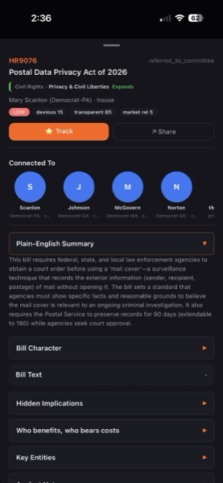
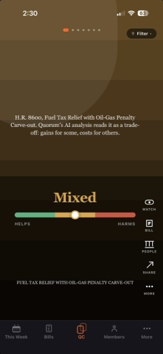
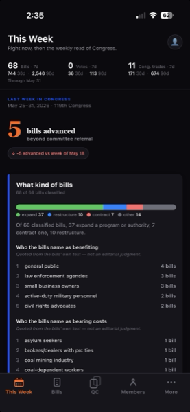
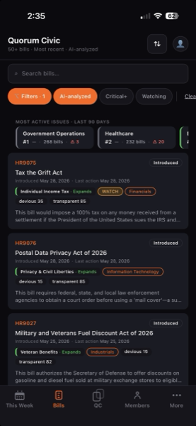

Understand what Congress is doing, and what it means.
Quorum Civic is a lookup app for the public record. Search legislation, read plain-English bill analysis, follow roll-call votes, and ask questions about Congress in your own words.
A look inside
Swipe to explore →




What's inside
Bill intelligence
Plain-English summaries of legislation. See which bills are transparent and which bury hidden riders, sponsorships, or industry-specific carve-outs.
Roll-call votes
House and Senate roll calls, with each member's position and party-line behavior. See who broke ranks and on what.
Ask anything
A natural-language interface over the civic data layer. Ask about a bill, a member, a committee, a vote, and get a sourced answer.
Built on public records
Every fact is traceable to its source: Congress.gov, the Federal Register, the FEC, and SEC filings. No proprietary insider data, no closed sources.
What it isn't
Quorum Civic is a civic information tool. It is not a brokerage, not a financial advisor, and not a news aggregator. It does not provide personalized investment advice. Every piece of intelligence in the app is framed with its source and its limits.
Why this was built
We didn't set out to build a civic app. The original idea was a market tool, a stock app that read Congress as signal. Not just the trades members disclose (that data's old by the time you see it) but the broader pattern of what the legislature was doing, and what it might tell you about where the market was headed.
But the more the dataset grew, the less the prediction mattered. The bills themselves started to stand out. The financial growth of members of Congress stood out. The money was the story, just not the story anyone set out to tell.
“I went looking for a trading edge. What I kept finding was the money leading somewhere else entirely, into the bills, the votes, the quiet machinery of Congress. At some point the only honest question left was: what is Congress actually doing?”
James
Quorum Civic is the answer to that question. It's a lookup app for the public record. No prediction, no portfolio, no pitch. Just what's hidden in plain sight.
About
The Katalys Group is a martech consulting company that builds solutions. We take business ideas and make them real. Quorum Civic is one of them, a small, focused lookup engine that turns Congress's daily output into something a citizen can actually read.
Questions, feedback, or press inquiries: hello@quorumcivic.app.